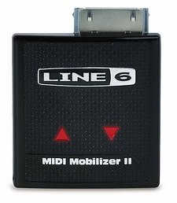

News on this slipped out last week, so in case you didn’t see it, Line 6 has released a new version of its MIDI Mobilizer interface, basically now it supports CoreMIDI which is becoming widespread throughout iOS music apps. Here’s the full guff from Line 6 –
Line 6, Inc. (line6.com), the industry leader in digital modeling technology for musicians, introduces MIDI Mobilizer™ II, its latest portable MIDI interface that connects all classic and modern MIDI equipment to Apple® iPhone® and iPad®. Descended from the first-generation MIDI Mobilizer (the world’s first MIDI interface for Apple iOS devices), MIDI Mobilizer II is the ideal MIDI interface for GarageBand® for iPad® and other CoreMIDI music apps.
“MIDI Mobilizer II makes portable music production easy,” remarked Chris Grigg, Line 6 mobile products manager. “Anyone with an iPhone or iPad and a MIDI controller can connect MIDI Mobilizer II and be recording and playing music in seconds. And with new apps being developed all the time, users can access an incredibly wide variety of instruments, software and more.”
MIDI Mobilizer II is compatible with CoreMIDI, the new standard for iOS music apps. This allows users to connect their MIDI gear to the latest crop of music apps like GarageBand for iPad and many other exciting music creation and education apps from developers all over the world.
MIDI Mobilizer II plus MIDI Memo Recorder, an app created by Line 6 that’s free on the App StoreSM, allow users to record, play and back up any MIDI data. MIDI Memo Recorder features a streamlined interface for easy storage and recall of MIDI recordings, patches and more. Users can back up and transfer MIDI data into replacement keyboards, classic and modern MIDI equipment and a variety of Line 6 guitar amplifiers and multi-effect processors. MIDI recordings can also be opened in any digital audio recording software that supports the SMF (Standard MIDI File) format.
MIDI Mobilizer II is compatible with iPod touch (3rd and 4th generation), iPhone (iPhone 3GS and iPhone 4), iPad and iPad 2, and is powered through the device – no batteries required.
The first-generation MIDI Mobilizer interface is still available and the perfect choice for older iOS devices. It is compatible with iPod touch (1st, 2nd, 3rd, and 4th generation), iPhone (iPhone, iPhone 3G, iPhone 3GS), iPad and iPad 2. MIDI Mobilizer does not support CoreMIDI.
For more information, visit http://www.line6.com/midimobilizer.
Suggested retail price $69.99